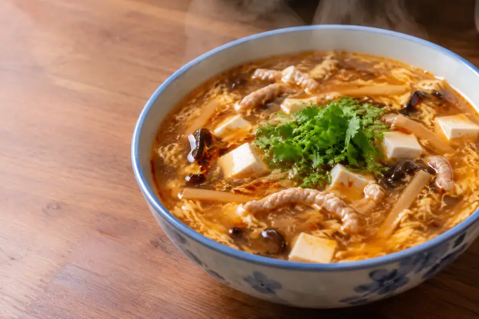

Soup汤 · Sichuan川
Hot and Sour Soup酸辣汤
The soup everyone has ordered at a Chinese restaurant. Its heat comes mostly from white pepper rather than chilli and its sourness from black vinegar; tofu, mushrooms, egg ribbons and a little pork are suspended in a light thickened broth. Add the vinegar and pepper at the very end for the sharpest aroma.中餐馆里人人都点过的汤。它的辣主要来自白胡椒而不是辣椒，酸来自香醋；豆腐、香菇、蛋花和一点肉丝用薄芡托着，一勺下去什么都有。醋和胡椒要出锅前再放，香味才冲。

Ingredients食材
- Firm tofu老豆腐 200 g · 200 g firm tofu, cut into thin strips老豆腐 200 克，切细条
- Pork loin猪里脊 100 g · 100 g pork loin, cut into fine strips猪里脊 100 克，切细丝
- Shiitake香菇 10 g · 4 dried shiitake, soaked and sliced干香菇 4 朵，泡软切丝
- Carrots胡萝卜 50 g · a third of a carrot, in fine strips小半根，切细丝
- Eggs鸡蛋 100 g · 2 eggs, beaten2 个，打散
- Chicken broth鸡高汤 500 g · 2 cups (500 mL) chicken stock plus 2 cups water or mushroom soaking liquid鸡高汤 2 杯（500 mL），另加 2 杯水或泡香菇的水
- Soy sauce生抽 18 g · 1 tbsp1 汤匙
- Dark soy sauce老抽 3 g · 1/2 tsp (for colour)1/2 茶匙（上色）
- Chinese black vinegar (Chinkiang)香醋/陈醋 45 g · 3 tbsp black vinegar香醋 3 汤匙
- Black pepper黑胡椒 3 g · 1 tsp (white pepper is traditional)1 茶匙（白胡椒最地道）
- Cornstarch玉米淀粉 27 g · 3 tbsp, mixed with 5 tbsp water3 汤匙，加 5 汤匙水调匀
- Salt盐 2 g · about 1/3 tsp约 1/3 茶匙
- Sesame oil香油(芝麻油) 5 g · 1 tsp1 茶匙
- Green onions大葱/小葱 15 g · 2 stalks, sliced2 根，切葱花
Weights are as bought, before trimming or peeling. Costco pack sizes and availability vary; see each ingredient page.重量为买回来的原重（去皮去骨之前）。Costco 规格与有无随时变化，点食材名看详情。
Method做法
- Toss the pork with 1 tsp of the soy and 1 tsp of the cornstarch.肉丝加 1 茶匙生抽和 1 茶匙淀粉抓匀。
- Bring the stock and 2 cups water to a boil and simmer the mushrooms and carrot for 3 minutes.高汤加 2 杯水烧开，下香菇丝和胡萝卜丝煮 3 分钟。
- Add the pork, stirring it apart with chopsticks, then the tofu, and simmer 2 minutes.下肉丝用筷子划散，再放豆腐条煮 2 分钟。
- Add the rest of the soy, the dark soy and the salt.加剩下的生抽、老抽和盐。
- Stir the cornstarch mixture and pour it in while stirring until the soup thickens a little.水淀粉再搅匀，一边搅一边倒入，煮到汤稍稠。
- Lower the heat, drizzle in the egg in a thin circle and nudge once it sets.转小火，蛋液细细地绕圈淋入，定型后轻推。
- Turn off the heat, stir in the vinegar and pepper, then add the sesame oil and green onion.关火，加香醋和胡椒搅匀，淋香油、撒葱花。
Keys to success成功要点
- Both vinegar and pepper go in off the heat; boiling drives off the sour and the heat.醋和胡椒都是关火后放，一煮酸味和辣味就跑了。
- Cut everything into fine, even strips so each spoonful picks up a bit of everything.所有料切成细丝，粗细一致，一勺能舀到好几样。
- Adjust the heat with white pepper: less for the timid, up to 1.5 tsp for fans.辣度靠白胡椒调，怕辣少放，喜欢就加到 1.5 茶匙。
Common problems常见失败与补救
- Not sour enough不够酸
The vinegar went in too early and cooked off. Add another tbsp off the heat.醋放早了被煮掉。关火后再补 1 汤匙香醋。 - The egg clumped蛋花成了一团
The egg went in before thickening or too fast. Thicken first and pour from a height in a thin stream.汤没勾芡就下蛋或倒得太快。先勾芡，蛋液从高处细细淋下。
Watch it done视频参考
Chef Wang Gang's home-style hot and sour soup; under three minutes, about 300,000 views.王刚的酸辣汤家常做法，不到 3 分钟，播放三十万。
Made With Lau's Cantonese chef dad on hot and sour soup, in English; 19 minutes and very detailed.Made With Lau 粤菜大厨爸爸的酸辣汤，英文讲解，19 分钟，讲得最细。
Videos load only when you tap them (youtube-nocookie). Creators are credited; we do not host their videos.点了才加载视频（youtube-nocookie）。署名原作者，本站不托管视频。
Nutrition营养
| Energy热量 | 175 kcal |
| Protein蛋白质 | 13 g |
| Fat脂肪 | 9.1 g |
| of which saturated其中饱和脂肪 | 2.3 g |
| Carbohydrate碳水化合物 | 10 g |
| Fibre膳食纤维 | 1 g |
| Sodium钠 | 927 mg |
High sodium钠偏高 Sodium tiers: under 345 mg lower, 345-689 mg moderate, 690 mg and above high (this site's tiers; 15% of the 2,300 mg daily reference = 345 mg).钠分档：低于 345 mg 较低，345–689 mg 中等，690 mg 及以上偏高（本站分档；345 mg ＝ 每日参考 2300 mg 的 15%）。
Computed from the Canadian Nutrient File (Health Canada) with the weights above; oil and sauces are counted in full. Real dishes differ.按加拿大营养素数据库和上面的重量计算；油和酱汁按全量计入，实际会略低。
Good to know适合 / 需注意
- About 927 mg sodium per serving (about 40% of the 2,300 mg daily reference), on the high side; use less soy sauce or salt, and pair with unsalted sides.每份钠约 927 mg（约占每日参考 2300 mg 的 40%），偏高；少放酱油或盐，或搭配无盐主食与蔬菜。
- Contains allergens: Egg, Sesame, Soy, Wheat / gluten.含过敏原：鸡蛋、芝麻、大豆、小麦/麸质。
Tofu, egg and a little pork give the soup good protein; the heat comes from pepper, so ladle out bowls for children before adding it.豆腐、蛋和少量肉丝让一碗汤有不少蛋白质；辣来自胡椒，小孩可以先盛出再加胡椒。